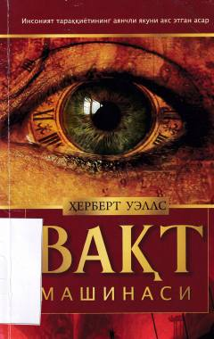

VMUzoq kelajakka sayohat qilgan olimning hayajonli sarguzashtlari.
Herbert Uellsning 'Vaqt mashinasi' ilmiy-fantastik asari vaqt bo'ylab sayohat g'oyasini badiiy adabiyotga olib kirgan dastlabki asarlardan biridir. Asarda Zamонlararо sayohatchi uzoq kelajakka yo'l olib, ilmiy taraqqiyot to'xtab qolgan va ijtimoiy tengsizlik insoniyat tanazzuliga olib kelgan jamiyatni kashf etadi. Sayohatchi bu yangi dunyoning sirlarini o'rganar ekan, kutilmagan va shiddatli voqealar bilan yuzlashadi.